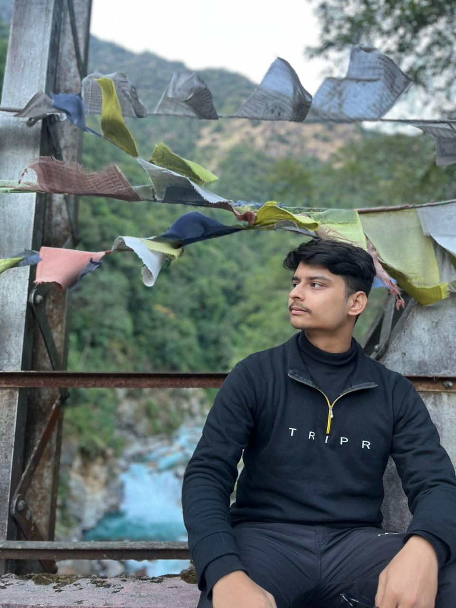

I am a Bachelor of Computer Applications (BCA) graduate passionate about software development, web technologies, and artificial intelligence. I have hands-on experience with HTML, CSS, JavaScript, Python, SQL, and Git/GitHub, along with a strong understanding of database management and responsive web development. I enjoy building clean, user-friendly applications and integrating AI into real-world projects through prompt engineering and modern AI tools. I am detail-oriented, adaptable, and committed to continuous learning. I am looking for an opportunity where I can contribute to innovative projects, expand my technical expertise, and grow as a software developer.
+9779825988602 | +918509500314
aprasun44@gmail.com
Jhapa, Nepal
Bachelor of Computer Applications
SRM University, Sikkim
NEB Grade 12 in Computer Management
Kanchnjunga H.S School Birtamode
Nexon Logistics
Developer Intern
I worked as a Front-End Developer Intern at Nexon Logistics, where I contributed to the development and maintenance of responsive web applications using modern web technologies. I collaborated with designers and developers to create intuitive, user-friendly interfaces and implement new features that improved the overall user experience. I integrated frontend components with backend services through APIs, reviewed code, identified and reported bugs, and participated in testing to ensure application quality and performance. I also leveraged AI-powered development tools to assist with code generation, debugging, documentation, and workflow optimization, enabling faster development and more efficient problem-solving. This internship strengthened both my technical skills and my ability to work effectively in a collaborative development environment.
Software Technology Parks of India (STPI), Gangtok
Internship
Bachelor of Computer Applications (BCA) graduate with a strong foundation in software development, web technologies, databases, and Artificial Intelligence (AI)-assisted development. Completed specialized training in IoT and Wearables through the Software Technology Parks of India (STPI), where I successfully developed an IoT-based ECG Monitoring System using the Arduino Nano 33 Board. Skilled in problem-solving, software debugging, system analysis, technical documentation, and full-stack web development. Experienced in building responsive web applications, integrating APIs, and leveraging modern AI tools and prompt engineering to enhance development workflows, automate repetitive tasks, and improve productivity. Passionate about continuous learning and eager to contribute to innovative projects while developing high-quality, scalable software solutions in a collaborative environment.
I worked on the Nexon Logistics website. I ensured the website was responsive, user-friendly, and optimized for performance across different devices. My contributions helped improve usability and deliver a smooth user experience.
I worked on the Tech Fest website for Transformation. I contributed to the user interface and ensured the website looked responsive and visually appealing across all devices. My work helped improve user engagement and provide a smooth browsing experience for visitors.
I designed and developed my personal portfolio website to showcase my projects, technical skills, certifications, and professional experience. The website serves as a central place where recruiters and clients can learn more about my work and achievements.
Successfully completed a Front-End Developer Internship at Nexon Logistics.
Successfully completed the IOMT & Wearables Internship conducted by STPI.
Available upon request
View my resume or download the PDF version below.